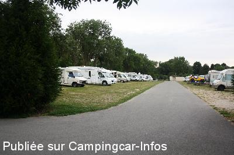
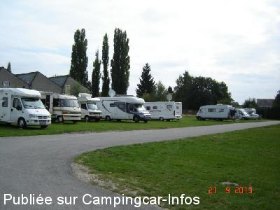
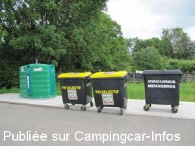
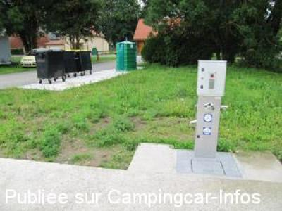
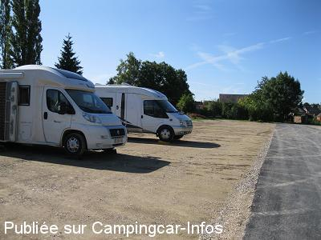
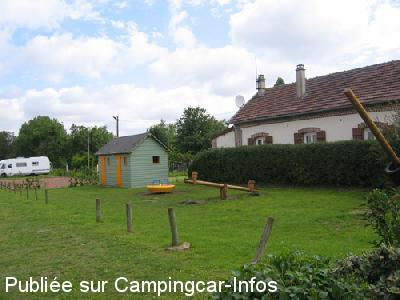

ASN = Aire de services avec stationnement nuit possible de :
CONTY
(N° 212)
Accès/adresse :
Rue du Marais
80160 CONTY
80160 CONTY
Latitude : (Nord) 49.74335° Décimaux ou 49° 44′ 36′′
Longitude : (Est) 2.15589° Décimaux ou 2° 9′ 21′′
Tarif : 2015
Stationnement gratuit
Eau : 2 €
Jetons à l'Office de Tourisme, la boulangerie et la mairie
Type de borne : Artisanale
Services :


Poubelles tri sélectif
Tous commerces
Passage du boulanger à 9 h
Autres informations :
Ouverte toute l'année
70 emplacements
Tél : +33(0)322 410 818
http://cccconty.com/1-la-communaute-de-communes-du-canton-de-conty/29-hebergements.html

Le 26/07/2015 par annick

Le 31/01/2014 par PC

Le 27/06/2012 par Office de Tourisme de Conty

Le 27/06/2012 par Office de Tourisme de Conty

Le 19/08/2011 par Milo

Le 07/07/2007 par Office de Tourisme de Conty
de
LionelG
le 28/12/2015 :
Bonne aire mais en ce mois de décembre un peu beaucoup boueuse, donc faire attention, c'est un endroit avec centres équestres et il y en a plusieurs. Belles rando. proches, indiquées près des toilettes. Sinon calme pendant la nuit les chiens des voisins sont rentrés. Ouf. Merci pour cette initiative.
Bonne aire mais en ce mois de décembre un peu beaucoup boueuse, donc faire attention, c'est un endroit avec centres équestres et il y en a plusieurs. Belles rando. proches, indiquées près des toilettes. Sinon calme pendant la nuit les chiens des voisins sont rentrés. Ouf. Merci pour cette initiative.
de
Gerard Marie-Christine
le 10/09/2015 :
Aire super agréable ! bien calme, paisible ! Cela fait plusieurs fois déjà que j'y suis passée avec toujours autant de plaisir ! Et le passage de la boulangère nous permet de bien commencer la journée !! Merci à Conty pour ce bel endroit !!
Aire super agréable ! bien calme, paisible ! Cela fait plusieurs fois déjà que j'y suis passée avec toujours autant de plaisir ! Et le passage de la boulangère nous permet de bien commencer la journée !! Merci à Conty pour ce bel endroit !!
de
Pascal
le 26/07/2015 :
Aire agréable, silencieuse avec de belles promenades aux alentours
Aire agréable, silencieuse avec de belles promenades aux alentours
de
Alain
le 13/05/2015 :
Bel aire de stationnement, belle balade sur la voie verte, a proximité d'un centre équestre, passage de la boulangère vers 9h,commerces,laverie à proximité
Merci Messieurs les élus.
Bel aire de stationnement, belle balade sur la voie verte, a proximité d'un centre équestre, passage de la boulangère vers 9h,commerces,laverie à proximité
Merci Messieurs les élus.
de
pacham51
le 12/10/2014 :
passage le 29 09 2014 calme beau site boulanger vers 9H
passage le 29 09 2014 calme beau site boulanger vers 9H
de
Guillou
le 31/05/2014 :
grande aire à proximité du centre ville et des étangs .merci à la municipalité .Par contre toilettes publiques à éviter,nettoyage ??
grande aire à proximité du centre ville et des étangs .merci à la municipalité .Par contre toilettes publiques à éviter,nettoyage ??
de
PC
le 31/01/2014 :
Stayed September 2013. Very nice popular aire, could get a little muddy in wet weather. Very calme night. Town quite small but pretty.
Stayed September 2013. Very nice popular aire, could get a little muddy in wet weather. Very calme night. Town quite small but pretty.
de
Mirol49
le 08/10/2013 :
De passage le 03.10.2013 après la visite de la cathédrale d'Amiens ( qui vaut le détour) je confirme les commentaires précédents : aire agréable et nuit calme. Belles balades autour des étangs.
De passage le 03.10.2013 après la visite de la cathédrale d'Amiens ( qui vaut le détour) je confirme les commentaires précédents : aire agréable et nuit calme. Belles balades autour des étangs.
de
Office de Tourisme de Conty
le 27/06/2012 :
La commune de Conty a plus que doublé la capacité d'accueil des camping-caristes cette année avec l'aménagement d'un parking à coté de l'ancienne aire.
Une borne a été installée pour l'eau et la vidange fonctionnant avec des jetons.
Des poubelles ont été installé (ordures ménagére, tri sélectif et verre) et un panneau d'affichage est prévu.
L'aire se situe à 5 min à pied du centre ville (boulangerie, presse, casino, charcutier, boucher, tabac, restaurants...) et à 2 min des étangs.
La commune de Conty a plus que doublé la capacité d'accueil des camping-caristes cette année avec l'aménagement d'un parking à coté de l'ancienne aire.
Une borne a été installée pour l'eau et la vidange fonctionnant avec des jetons.
Des poubelles ont été installé (ordures ménagére, tri sélectif et verre) et un panneau d'affichage est prévu.
L'aire se situe à 5 min à pied du centre ville (boulangerie, presse, casino, charcutier, boucher, tabac, restaurants...) et à 2 min des étangs.
de
Matthieu
le 10/06/2012 :
§
Aire trés agréable. de beau emplacement sur l'herbe.
De l'eau et des vidange le tout très propre
Apparement 2 Euros le Jeton pour le plein d'eau. Jeton a prendre a la boulangerie ou dans les commerces de proximité.
Un Parc et un centre équestre juste a coté très agréable pour les ballades a pieds ou a vélo. Divers étang.
Pour les technophiles la 3G passe très bien.
Bref que du bonheur nous reviendrons
§
Aire trés agréable. de beau emplacement sur l'herbe.
De l'eau et des vidange le tout très propre
Apparement 2 Euros le Jeton pour le plein d'eau. Jeton a prendre a la boulangerie ou dans les commerces de proximité.
Un Parc et un centre équestre juste a coté très agréable pour les ballades a pieds ou a vélo. Divers étang.
Pour les technophiles la 3G passe très bien.
Bref que du bonheur nous reviendrons
de
versavel
le 11/05/2011 :
Super!! Aire,vidange et eau le tout gratuit(Pas d'edf). A même pas 1km des commerces(trés aimables en plus).Possibilité de pêcher à la journée(café de la mairie).Un weeckend entre amis trés réussi!
Merci beaucoup à la commune de Conty,on repassera!!!
Super!! Aire,vidange et eau le tout gratuit(Pas d'edf). A même pas 1km des commerces(trés aimables en plus).Possibilité de pêcher à la journée(café de la mairie).Un weeckend entre amis trés réussi!
Merci beaucoup à la commune de Conty,on repassera!!!
de
adeline85
le 22/04/2010 :
Très belle aire, mais il faut arriver de bonne heure pour avoir une place car le centre équestre à proximité réquisitionne des emplacements lorsqu'il y a des manifestations. Nous sommes arrivés justement sur cette aire la veille d'une manifestation, nous avons dû nous garer sur le petit parking à côté des pompiers.
Sinon, des toilettes sont mises à disposition et le boulanger passe à 9h. Bravo à la commune!
Très belle aire, mais il faut arriver de bonne heure pour avoir une place car le centre équestre à proximité réquisitionne des emplacements lorsqu'il y a des manifestations. Nous sommes arrivés justement sur cette aire la veille d'une manifestation, nous avons dû nous garer sur le petit parking à côté des pompiers.
Sinon, des toilettes sont mises à disposition et le boulanger passe à 9h. Bravo à la commune!
de
Lamart
le 14/05/2009 :
Bonjour. Aire sympa, calme, gratuite.
Deux défauts:
1) en cas de grosses pluies, c'est un peu boueux, voire beaucoup.
2) faire le plein d'eau exige l'usage de bidons.
Différentes qualités, comme vu plus haut et déjà dites par d'autres personnes. Pourtant, un gros avantage: une connexion wifi de très bonne qualité!
Voila qui est rare.
Bonjour. Aire sympa, calme, gratuite.
Deux défauts:
1) en cas de grosses pluies, c'est un peu boueux, voire beaucoup.
2) faire le plein d'eau exige l'usage de bidons.
Différentes qualités, comme vu plus haut et déjà dites par d'autres personnes. Pourtant, un gros avantage: une connexion wifi de très bonne qualité!
Voila qui est rare.
de
cc76
le 06/05/2007 :
Nous y avons dormi puis le lendemain promenade à vélo près des étangs, super balades, même à pied. Déjeuner avec le CCar près des étangs...
Nous y avons dormi puis le lendemain promenade à vélo près des étangs, super balades, même à pied. Déjeuner avec le CCar près des étangs...